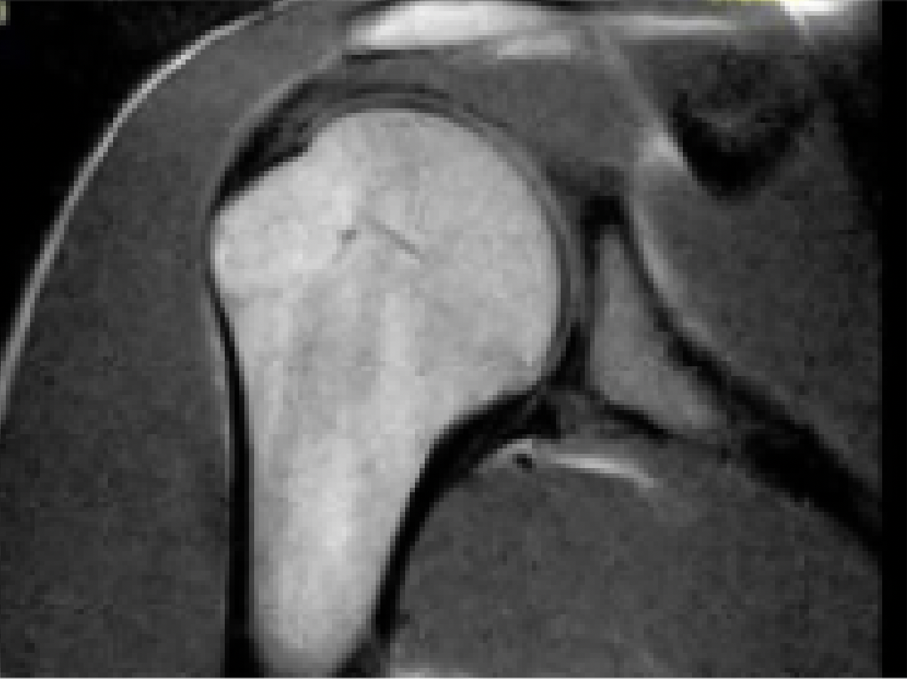

AI in MRI Shoulder Scans

Rotator cuff tears are common injuries (20% general population; 40% athletes (Yamamoto et al., 2010)). Undiagnosed injuries lead to chronic instability and pain. Magnetic resonance arthrograms (MRA) provide high sensitivity (≈90%) and specificity (≈95%) but are invasive, and costly. Magnetic resonance imaging (MRI) is less invasive but offers lower sensitivity (≈80%) and specificity (≈85%). This study will improve diagnostic accuracy of MRI detecting rotator cuff tears using convolutional neural networks (CNNs) and transfer learning. UNets, used for transfer learning in a musculoskeletal classification network, will demonstrate a novel methodology gaining representations of features extracted from anatomically similar data. The study will test the accuracy of transfer learning, single (grouped) vs double (successive) vs single (non-grouped) for the encoder using hip MRIs (n=>1000; NHI) and knee MRIs (n=1370; StanfordCA) to capture general structural patterns. Final models will classify healthy versus torn rotator cuffs using MRI scans confirmed by surgical operation reports, the diagnostic gold standard (n>300). All models will use PyTorch as the base library. Metrics such as sensitivity, specificity, and area under the curve (AUC) will evaluate the models' performance. This study builds on prior work, which achieved a 69% accuracy using a 3Dimensional neural network without transfer learning (Shim et al., 2020), and hypothesizes that anatomically relevant datasets with transfer learning will yield better results. In this study we found the following improvements: our end to end training achieved an accuracy of 89% and through the usage of double transfer learning we received an accuracy of 54%. Through the use of UNets this study aims to develop a CNN-based diagnostic tool that reduces false negatives, enhances early detection, and minimizes reliance on invasive and costly procedures.
Key Features
- Increased accuracy of detecting rotator cuff tears through MRI scans
- Proved that with limited access to data, the model could still be successfully trained
Technologies Used
- Magnetic Imaging Systems: MRI technology for non-invasive imaging
- Convolutional Neural Networks: Deep learning architecture for image analysis
- Python and PyTorch: Programming framework for model development
- Transfer Learning: Leveraging pre-trained models for improved accuracy